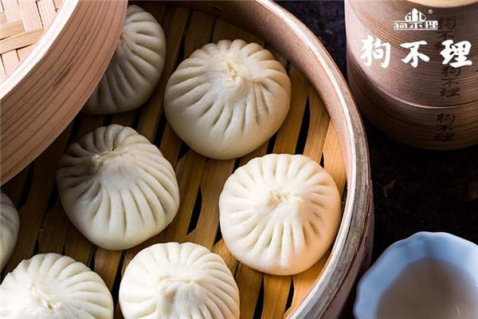
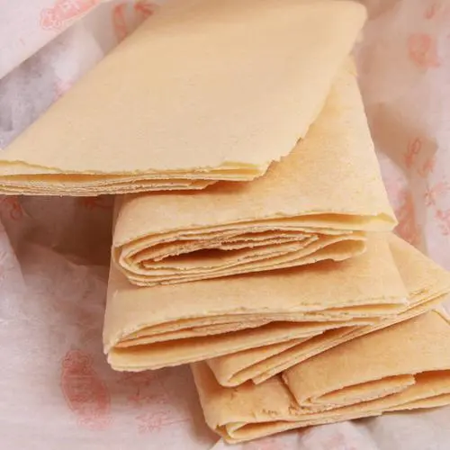
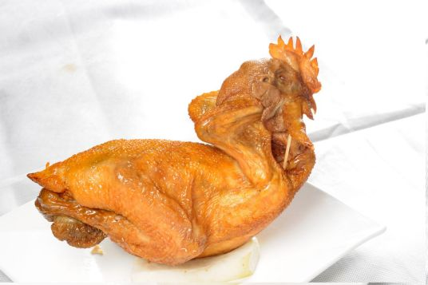
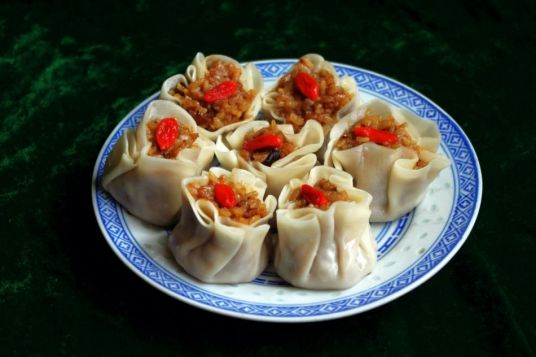
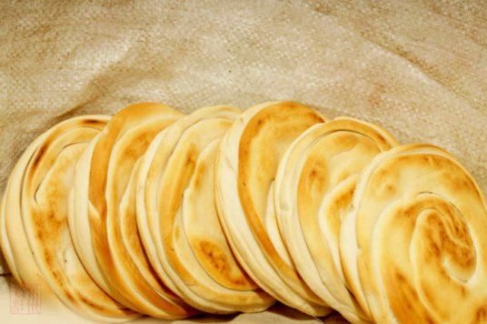
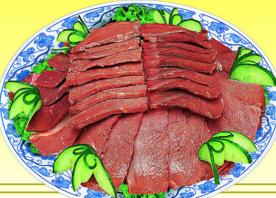

-
狗不理包子
狗不理包子是中国天津的一道闻名中外的传统小吃，该小吃以一道由面粉、 猪肉等材料制作而成的小吃，其始创于公元1858年，有100多年历史，该小吃为“天津三绝”之首，是中华老字号之一。 狗不理包子的面、馅选料精细，制作工艺严格，外形美观，特别是包子褶花匀称，每个包子都不少于15个褶
-
山东煎饼
山东煎饼，传统特色面食。源于泰安，这是齐鲁晚报有文字记载最早的。现代煎饼制作方法的创制年代难以考证， 但“煎饼”一词的使用 山东煎饼可以追溯到很早以前。相传孟姜女哭长城，所带食物即煎饼。
-
德州扒鸡
德州扒鸡又称德州五香脱骨扒鸡，是著名的德州三宝（扒鸡、西瓜、金丝枣）之一。德州扒鸡是中国山东传统名吃，鲁菜经典。德州扒鸡制作技艺为国家非物质文化遗产。 [1] 早在清朝乾隆年间，德州扒鸡就被列为山东贡品送入宫中供帝后及皇族们享用。
-
临清烧卖
临清烧卖，是聊城临清的地方传统名吃，一种介于包子和饺子两者之间，经特殊方法蒸制而成的包馅面食。临清烧麦以王家烧麦为最佳，已有100多年的历史。临清烧卖为临清面食行业的四大名吃之一。
-
潍县杠子头火烧
潍县杠子头火烧是一款山东小吃，制作原料主要有面粉等。成品含水量少，夏季不易馊，咀嚼时有甜香味，便于长时间保存。
-
曹记五香驴肉
天津风味小吃。营养成分丰富，含有蛋白质、钙、磷、铁等。风味独特，香飘津门。曹记五香驴肉已有200多年的历史，1938年入津经营，现已传至第五代人。1984年被评为天津市饮食业最佳食品。